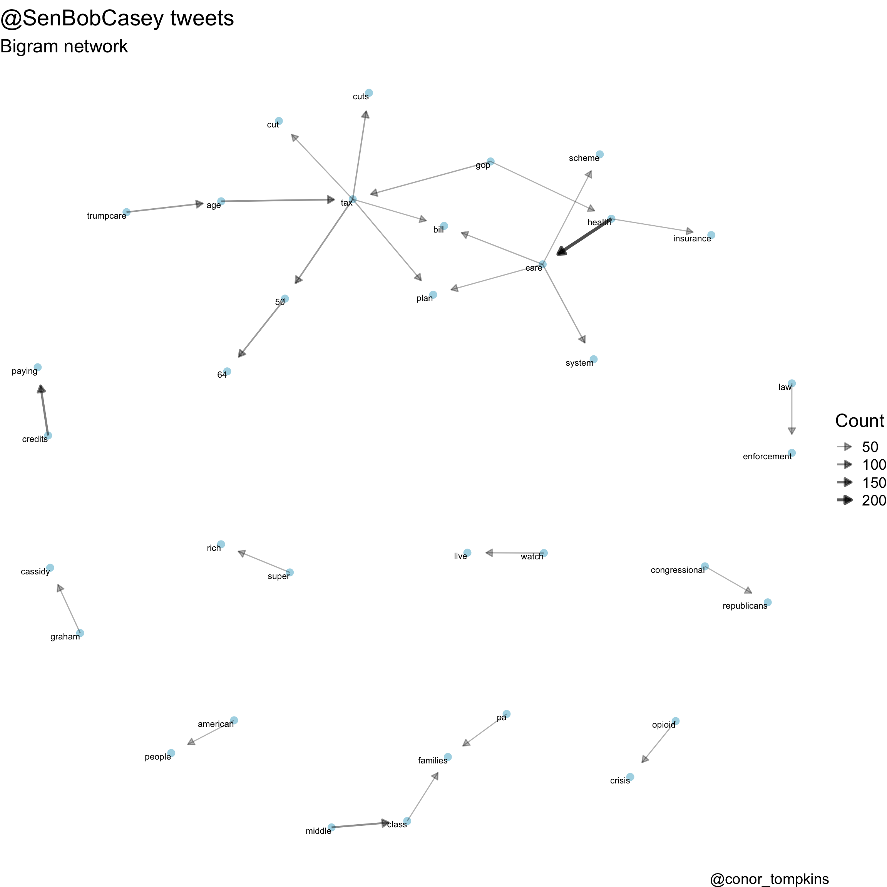
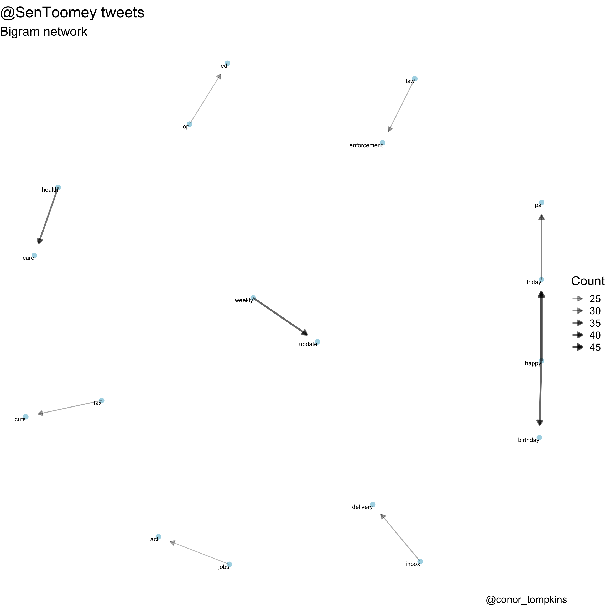
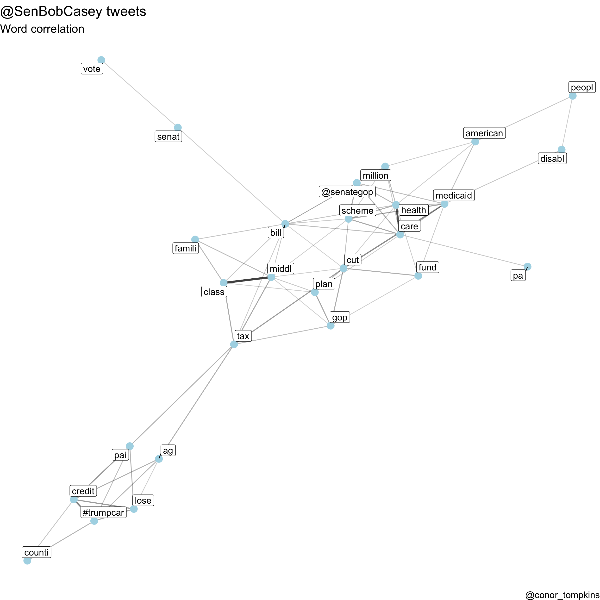
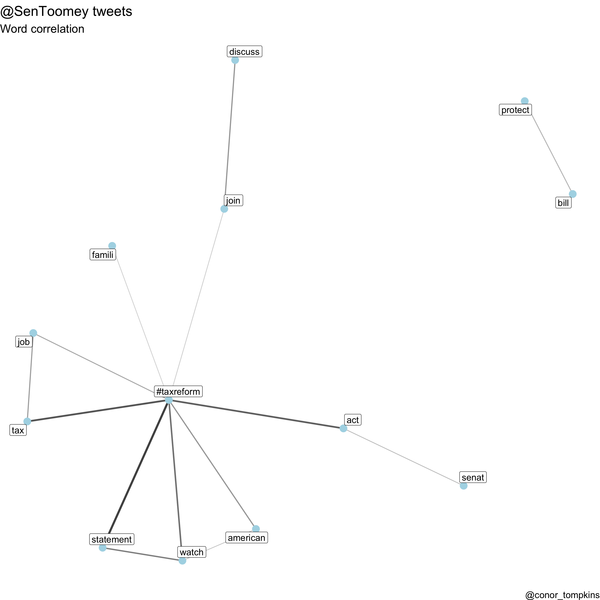
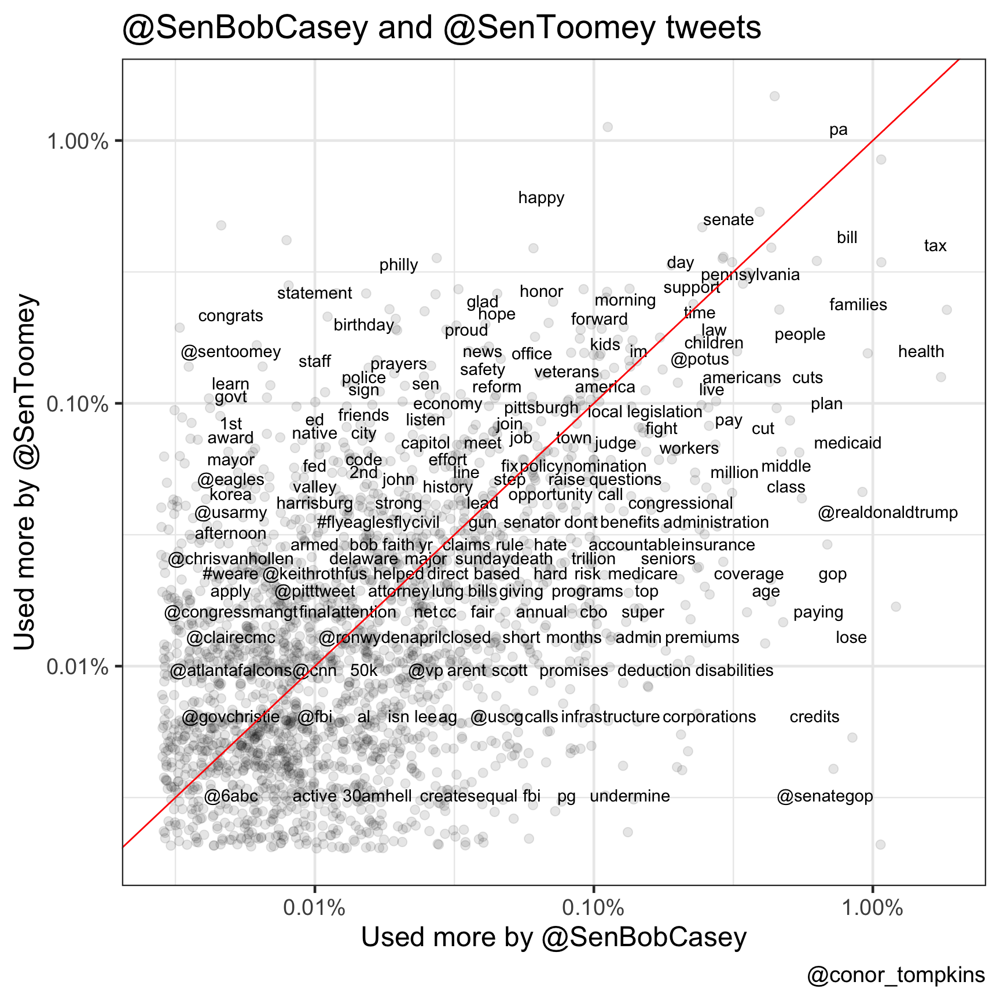
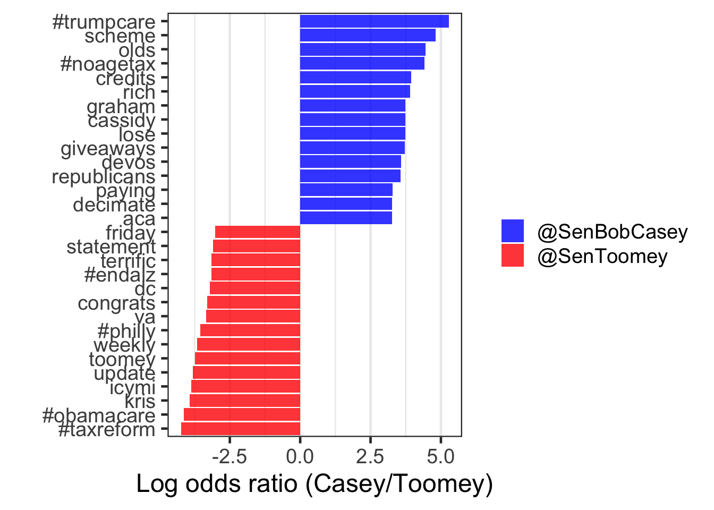

library(tidyverse)
library(tidytext)
library(lubridate)
library(rtweet)
library(scales)
library(knitr)
library(kableExtra)
set.seed(1234)
theme_set(theme_bw(base_size = 18))
title <- "@SenBobCasey and @SenToomey tweets"
caption <- "@conor_tompkins"As a follow-up to my post about how Pittsburgh Mayor Bill Peduto uses Twitter, I thought it would be useful to examine and compare how Pennsylvania’s U.S. senators use Twitter. I will use some of the same methods, in addition to some comparative methods. In this analysis, I exclude retweets and quote tweets.
This code loads the libraries requires for the analysis, and sets some prefences for plotting.
This code uses the rtweet package to download the senator’s tweets via the Twitter API:
df_casey <- get_timelines("SenBobCasey", n = 3200) %>%
mutate(senator = "Casey")
df_toomey <- get_timelines("SenToomey", n = 3200) %>%
mutate(senator = "Toomey")I have already pulled the data from Twitter, so this code downloads the tweet data from my GitHub repo.
source("https://raw.githubusercontent.com/conorotompkins/pittsburgh_twitter/master/scripts/tidytext_functions.R")
df_casey <- read_csv("https://raw.githubusercontent.com/conorotompkins/pittsburgh_twitter/master/data/tweets_casey.tweets.csv")
df_toomey <- read_csv("https://raw.githubusercontent.com/conorotompkins/pittsburgh_twitter/master/data/tweets_toomey.tweets.csv")Bigram analysis
Bigrams are two-word chunks pulled from text. For example, “Senator Casey”, “Casey is”, “is from”, and “from Pennsylvania” are all bigrams of the sentence “Senator Casey is from Pennsylania”. This code extracts the bigrams from Senator Casey’s tweets and counts how many times they occur. It also removes some artifacts of URLs and other Twitter metadata that are not relevant.
casey_stopwords <- c("0085", "009f", "f0", "00a6")
casey_replacers <- c("'s")
tweets_casey <- count_twitter_bigrams(df_casey, custom_stopwords = casey_stopwords)
tweets_casey %>%
rename(count = n) %>%
head() %>%
kable("html") %>%
kable_styling()| word1 | word2 | count |
|---|---|---|
| health | care | 226 |
| credits | paying | 123 |
| middle | class | 94 |
| age | tax | 80 |
| 50 | 64 | 69 |
| tax | 50 | 67 |
This network graph shows how the words are related:
visualize_bigrams(tweets_casey, 20,
title = "@SenBobCasey tweets",
subtitle = "Bigram network",
caption = "@conor_tompkins")
Takeaway: Senator Casey focused on the tax cut and ACA repeal bills.
This code extracts the bigrams from Senator Toomey’s tweets:
toomey_stopwords <- c("0085", "009f", "f0", "00a6")
tweets_toomey <- count_twitter_bigrams(df_toomey, custom_stopwords = toomey_stopwords)
tweets_toomey %>%
rename(count = n) %>%
head() %>%
kable("html") %>%
kable_styling()| word1 | word2 | count |
|---|---|---|
| happy | friday | 45 |
| happy | birthday | 39 |
| weekly | update | 39 |
| health | care | 36 |
| friday | pa | 32 |
| inbox | delivery | 24 |
This is the bigram network plot for Senator Toomey:
visualize_bigrams(tweets_toomey, 20,
title = "@SenToomey tweets",
subtitle = "Bigram network",
caption = "@conor_tompkins")
Takeaway: Senator Toomey’s bigrams reflect that he uses Twitter to issue weekly updates and notify constituents about his newsletter.
Word correlation
We can also calculate and graph how the words in the tweets are correlated with each other. This code also stems the words, which combines similar words for the sake of capturing the broader usage. For example, “county” and “counties” could be stemmed into “counti”.
This code calculates and plots the correlations:
casey_words <- word_correlations(df_casey, minimum = 75, casey_stopwords)
visualize_word_correlations(casey_words,
minimum_correlation = .2,
title = "@SenBobCasey tweets",
subtitle = "Word correlation",
caption = "@conor_tompkins")
Takeaway: The two main clusters in this graph show that Senator Casey used a consistent vocabulary to discuss the tax cut bill and the effort to repeal the ACA.
This code calculates and plots the correlations for Senator Toomey’s tweets:
toomey_words <- word_correlations(df_toomey, minimum = 75, casey_stopwords)
visualize_word_correlations(toomey_words,
minimum_correlation = .2,
title = "@SenToomey tweets",
subtitle = "Word correlation",
caption = "@conor_tompkins")
Takeaway: This plot shows that Senator Toomey used a consistent vocabulary to discuss his main policy goal, the tax cut bill.
Word frequency comparison
We can also compare how frequently the senators use various words. To set a baseline, Senator Toomey tweeted around 800 more times than Senator Casey in this sample of their tweets.
tweets <- bind_rows(df_casey, df_toomey)
replace_reg <- "https://t.co/[A-Za-z\\d]+|http://[A-Za-z\\d]+|&|<|>|RT|https|'s|'"
unnest_reg <- "([^A-Za-z_\\d#@']|'(?![A-Za-z_\\d#@]))"
tweets %>%
select(senator, status_id, text, is_quote, is_retweet) %>%
filter(is_quote == FALSE, is_retweet == FALSE) %>%
mutate(text = str_replace_all(text, replace_reg, ""),
senator = factor(senator, levels = c("SenToomey", "SenBobCasey"))) %>%
count(senator) %>%
rename(count = n) %>%
head() %>%
kable("html") %>%
kable_styling()| senator | count |
|---|---|
| SenToomey | 2916 |
| SenBobCasey | 2180 |
This code breaks the tweets down into single words:
tidy_tweets <- tweets %>%
select(senator, status_id, text, is_quote, is_retweet) %>%
filter(is_quote == FALSE, is_retweet == FALSE) %>%
mutate(text = str_replace_all(text, replace_reg, ""),
senator = factor(senator, levels = c("SenBobCasey", "SenToomey"))) %>%
unnest_tokens(word, text, token = "regex", pattern = unnest_reg) %>%
filter(!word %in% stop_words$word,
!word %in% c("009f", "00a6", "f0", "http", ".va"),
str_detect(word, "[a-z]"))This code calculates how frequently each word is used by each senator, given how many tweets each senator has:
frequency <- tidy_tweets %>%
group_by(senator) %>%
count(word, sort = TRUE) %>%
left_join(tidy_tweets %>%
group_by(senator) %>%
summarise(total = n())) %>%
mutate(freq = n/total)
frequency %>%
rename(count = n) %>%
head() %>%
kable("html") %>%
kable_styling()| senator | word | count | total | freq |
|---|---|---|---|---|
| SenToomey | pa | 344 | 27773 | 0.0123861 |
| SenBobCasey | tax | 336 | 20002 | 0.0167983 |
| SenBobCasey | health | 299 | 20002 | 0.0149485 |
| SenBobCasey | care | 282 | 20002 | 0.0140986 |
| SenBobCasey | @realdonaldtrump | 227 | 20002 | 0.0113489 |
| SenToomey | happy | 189 | 27773 | 0.0068052 |
This code spits the frequency into two columns, one for each senator. The data is sorted by how often Senator Casey used the word.
frequency <- frequency %>%
select(senator, word, freq) %>%
spread(senator, freq) %>%
arrange(desc(SenBobCasey))
frequency %>%
head() %>%
kable("html") %>%
kable_styling()| word | SenBobCasey | SenToomey |
|---|---|---|
| tax | 0.0167983 | 0.0044648 |
| health | 0.0149485 | 0.0017643 |
| care | 0.0140986 | 0.0018363 |
| @realdonaldtrump | 0.0113489 | 0.0004321 |
| families | 0.0088991 | 0.0026645 |
| lose | 0.0083992 | 0.0001440 |
This plot compares how often the senators use each word. I think it gives a somewhat fuzzy view of the policy issues each senator focuses on.
ggplot(frequency, aes(SenBobCasey, SenToomey)) +
geom_jitter(alpha = 0.1, size = 2.5, width = 0.25, height = 0.25) +
geom_text(aes(label = word), check_overlap = TRUE, vjust = 1.5) +
scale_x_log10(labels = percent_format()) +
scale_y_log10(labels = percent_format()) +
geom_abline(color = "red") +
labs(title = title,
x = "Used more by @SenBobCasey",
y = "Used more by @SenToomey",
caption = caption)
Takeaway: Senator Toomey was more likely to use words like “economy”, “safety”, “reform”, and “prayers”. Senator Casey was more likely to use words like “deficit”, “premiums”, “medicaid”, “disabilities”, “credits”, and “corportations”.
Word ratios
We can also directly compare how often each senator used a word. This code calculates that differece. The higher the log ratio, the greater the difference in how often each senator used the word.
word_ratios <- tidy_tweets %>%
filter(!str_detect(word, "^@")) %>%
count(word, senator) %>%
filter(sum(n) >= 10) %>%
ungroup() %>%
spread(senator, n, fill = 0) %>%
mutate_if(is.numeric, funs((. + 1) / sum(. + 1))) %>%
mutate(logratio = log(SenBobCasey / SenToomey)) %>%
arrange(desc(logratio))
word_ratios %>%
arrange(desc(abs(logratio))) %>%
head() %>%
kable("html") %>%
kable_styling()| word | SenBobCasey | SenToomey | logratio |
|---|---|---|---|
| #trumpcare | 0.0055571 | 0.0000283 | 5.279218 |
| scheme | 0.0034820 | 0.0000283 | 4.811743 |
| olds | 0.0024268 | 0.0000283 | 4.450729 |
| #noagetax | 0.0023565 | 0.0000283 | 4.421315 |
| #taxreform | 0.0000352 | 0.0024356 | -4.237725 |
| #obamacare | 0.0000352 | 0.0022091 | -4.140086 |
Senator Toomey often references wife Kris in his tweets, usually while offering condolences or prayers.
This plot shows which words are more uniquely used by each senator.
word_ratios %>%
group_by(logratio < 0) %>%
top_n(15, abs(logratio)) %>%
ungroup() %>%
mutate(word = reorder(word, logratio)) %>%
ggplot(aes(word, logratio, fill = logratio < 0)) +
geom_col(alpha = .8) +
coord_flip() +
labs(x = "",
y = "Log odds ratio (Casey/Toomey)") +
scale_fill_manual(name = "",
values = c("blue", "red"),
breaks = c(FALSE, TRUE),
labels = c("@SenBobCasey", "@SenToomey")) +
theme(panel.grid.major.y = element_blank())
Takeaway: This plot shows the stark divide between how each senator views some of the major policy issues. Senator Casey directly criticized the problems he saw during the tax cut and ACA fight (“trumpcare”, “scheme”, “lose”, “giveaways”, and “#noagetax”). Senator Toomey referenced “#philly” and “#obamacare” much more, and framed the tax cut bill as “#taxreform”.